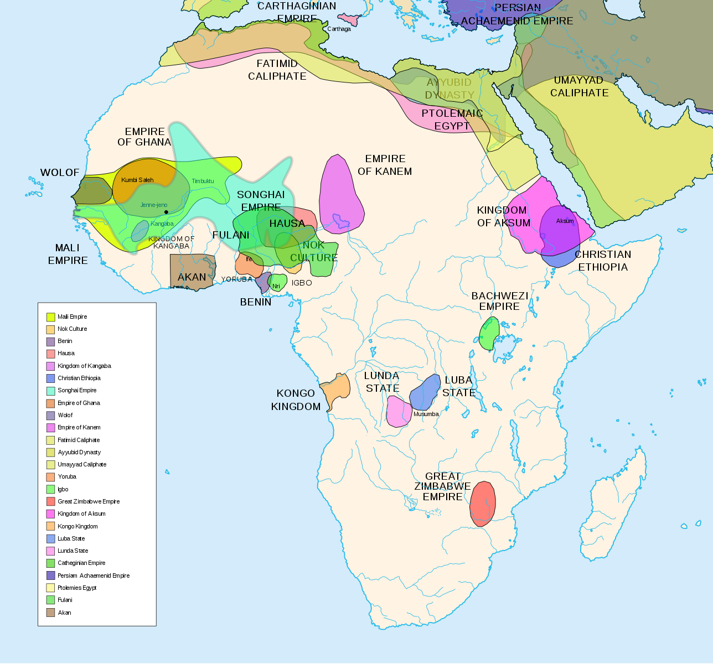

Interactive Papers

Hans Mayr,“The Voyages and Acts of Dom Francisco” (1505), from E. Axelson, “South East Africa,” 1940, 231-238, quoted in G.S.P. Freeman-Grenville, The East African Coast: Selected Documents (London: Rex Collings, 1974), 105-112 and reprinted as part of the Internet Modern History Sourcebook, Paul Halsall, ed., October 1998, .
The Voyage and Acts of Dom Francisco, Viceroy of India, written in the ship Sam Rafael of Oporto, captained by Feman Suarez.
In-Class Collective Analysis: [Part 1], [Part 2]In the year 1505, on 25 March, Tuesday, the feast of the Annunciation of Our Lady, Dom Francisco d'Almeida sailed with a fleet of twenty vessels. There were fourteen large men-of-war and six caravels.
They rounded the Cape of Good Hope on 20 June and were driven away from it seventy leagues. On 2 July there were great storms with thunder, and two men from the flagship and one from the Lyomarda fell overboard. On 18 July they sighted land for the first time, 369 leagues beyond the Cape of Good Hope, near the Ylhas Darradeiras, which are thirty leagues from the island of Mozambique. On 19 July they were in sight of Mozambique, and on 21 July they were crossing the shallow waters of Sam Rafael, which are thirty leagues from Kilwa.
On Tuesday, 22 July, they entered the harbour of Kilwa at noon, with a total of eight ships. Immediately on their arrival the Grand-Captain, Dom Francisco d'Almeida, sent Bona Ajuta Veneziano to summon the king. He excused himself from coming, but sent the Grand-Captain gifts instead; They were five goats, a small cow and a large number of coconuts and other fruit.
Next flay the Grand-Captain ordered the ships to have their artillery in readiness. Then the captains, each in his best clothes, and full armour, went in his own boat to lie off the town in the hope that the king would decide to come out. The sheikh, however, sent a message to say that he could not come since he had guests, but, if required, he would send the tribute due to the King of Portugal. This message was brought by a party of five Moors, who were immediately seized.
At dawn on Thursday, 24 July, the vigil of the feast of St. James the Apostle, all went in their boats to the shore. The first to land was the Grand-Captain, and he was followed by the others. They went straight to the royal palace, and on the way only those Moors who did not fight were granted their lives. At the palace there was a Moor leaning out of the window with a Portuguese flag in his hand, shouting: ‘Portugal! Portugal!’ This flag had been left behind by the admiral [Vasco da Gama] when he had arranged for Kilwa to pay a tribute of 1,500 ounces of gold a year. The Moor was asked to open the door, and, when he did not do so, the door was broken down with axes. They found neither the Moor nor anyone else in the Palace, which was deserted.
In Kilwa there are many strong houses several storeys high. They are built of stone and mortar and plastered with various designs. As soon as the town had been taken without opposition, the Vicar-General and some of the Franciscan fathers came ashore carrying two crosses in procession and singing the Te Deum. They went to the palace, and there the cross was put down and the Grand-Captain prayed. Then everyone started to plunder the town of all its merchandise and provisions.

The town of Kilwa lies on an island around which ships of 500 tons can sail. The island and town have a population of 4,000 people. It is very fertile and produces maize similar to that of Guinea, butter, honey, and wax. On the trees hang beehives like jars of three almudes capacity, each closed with woven palm leaves. There are holes through which the bees go in and come out.
There are many trees and palms here and on the mainland, some of them different from those of Portugal. From the island to the mainland the distance is in some places two leagues and in others one.
There are sweet oranges, lemons, vegetables, small onions, and aromatic herbs. They are grown in gardens and watered with water from the wells. Here also grows betel which has leaves like ivy and is grown like peas with sticks at the root for support. The leaf is used by the wealthy Arabs for chewing together with specially prepared limes which look like an ointment. They keep the leaves as if they were to be put on wounds. These leaves make the mouth and teeth very red, but are said to be most refreshing.
There are more black slaves than white Moors here: they are engaged on farms growing maize and other things. There are various types of peas which are produced by plants as high as large pepper trees; when they are ripe, they are gathered and stored. The soil is red, the top layer being sandy; the grass is always green. There are many fat beasts, oxen, cows, sheep, and goats and also plenty of fish; there are also whales which swim round the ships. There is no running drinking water on the island. Near the island there are other small islands which are inhabited. There are many boats as large as a caravel of fifty tons and other smaller ones. The large ones lie aground on the shore and are dragged down to the sea when the people wish to sail them. They are built without nails: the planks are sewn together with rope made from knotted coir from the coconut palm. The same kind of rope is used for the rudder. The boats are caulked with black pitch made from crude incense and resin. They sail from here to Sofala, 255 leagues away.
The palms here do not produce dates but from some of them wine and vinegar are obtained. These come from the palm trees which do not produce coconuts. The coconuts are the size of large melons, and from the fibres inside the shell all kinds of rope are made. Inside the shell is a fruit the size of a large pineapple. It contains half a pint of milk which is very pleasant to drink. When the milk has been drunk the nut is broken and eaten; the kernel tastes like a walnut which is not fully ripe. They dry it and it yields a large quantity of oil.
People here sleep raised above the ground in hammocks made of palm leaves in which only one person can lie.
The Portuguese found here a large quantity of pure drinking water. Flasks of very good perfume are exported from here and a large quantity of glass of all types and all kinds of cotton piece-goods, incense, resin, gold, silver, and pearls. The Grand-Captain ordered the loot to be deposited under seal in a house.
The fortress of Kilwa was built out of the best house there was. All the other houses around it were pulled down. It was fortified and guns were set in place with everything else a fort needs. Pero Ferreira was left in command of it with eighty men.
The country is not very hot. The men are armed with bows and large arrows, strong shields of palm leaves bound with cotton, and pikes better than those of Guinea. Few swords were seen. They have four catapults for hurling stones but do not yet know the use of gunpowder.
The sea laps the entrance of the fortress at high water near where the ships enter.
When the king fled from Kilwa, the Grand Captain appointed another, a local Moor beloved by all, whom they took in procession on horseback through the town.
Lime is prepared here in this manner: large logs of wood are piled in a circle and inside them coral limestone is placed; then the wood is burnt. The process after that is the same as in Portugal.
Cotton is found in abundance. It is of good quality and is planted and grows well in the island. The sheep have wool no better than goats. The slaves wear a cotton cloth round the waist and down to the knees; the rest of the body is naked. The white Arabs and slave owners wear two pieces of cotton cloth, one round the waist down to the feet and the other thrown over the shoulders and reaching down as far as where the first cloth is tied.
They have copper coins like our ceptis, four being equal to one real; Portuguese coins have the same value there as at home. There are no gold coins but the weight of their mitical is equal to 460 reis in Portugal.
The winter season in Kilwa is from April to September. It is not cold and for this reason the people wear scanty clothes.
The Grand-Captain twice went from one side of the town to the other. Once he saw twenty-five gazelle which had been let loose on the island. There are also many wild cats in the bush.
There are many vaulted mosques, one of which is like that of Cordova. All the upper-class Moors carry a rosary.